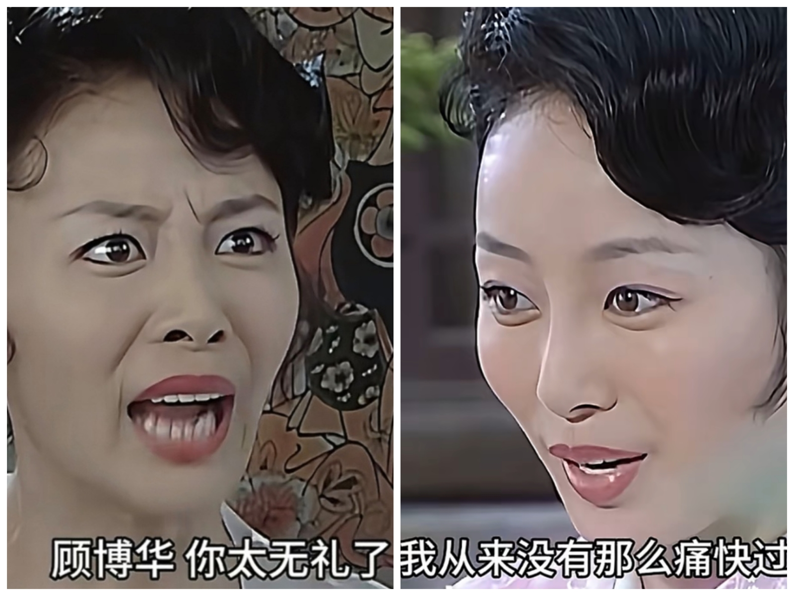
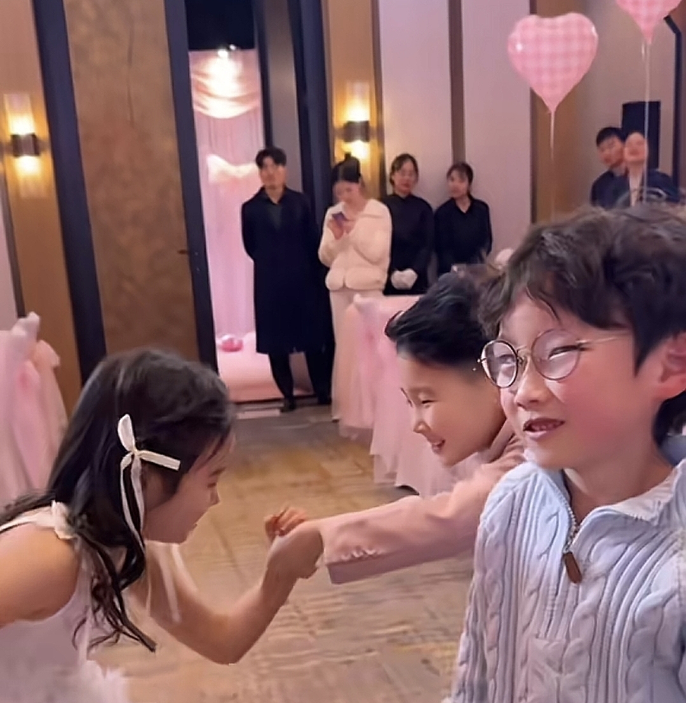
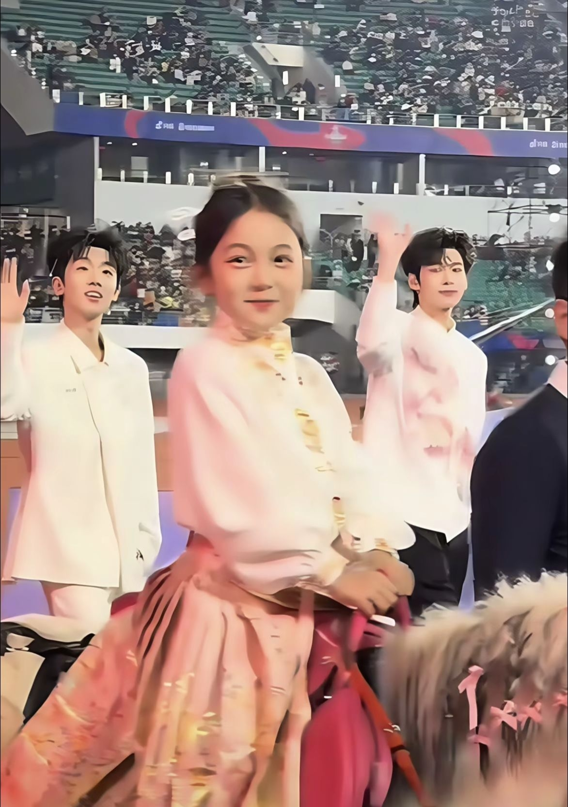

爸爸妈妈迫不及待的去为她改变，把这些痛苦的回忆留在她记不太清的时候，从此她的同学记住的都是她美好的样子，爸爸妈妈的爱让她从不用体验“自卑”这个词。
她吃了好多苦啊[快哭了] 这是整形的意义
看了那么多这个病的宝宝，你是第一个重视给孩子动手术治疗的家长[赞][赞]
她好乖啊，干什么都好配合，戴着那个仪器也不哭不闹的，是个超级乖的宝宝[流泪]
天呐，我真的第一次真实的感受到医学的力量，原来这个可以治疗的，可是我看到网上很多家庭的这样面容的孩子都没给治疗，
我的妈 原来这个病面容可以通过医疗改善啊 真不容易 孩子好幸运遇到这样的父母！
感觉现在的长相已经和同龄小孩没有明显区别了，[赞]
再过几个月眼睛恢复好了，你们不说都看不出的，小孩可以恢复的一点疤都没有
心疼了 肉眼可见小朋友的变化却不知道背地里吃了多少苦[流泪]
太厉害了 孩子是幸运的 能遇到这样的父母 这基本算改变了她的后半生了 变化真的很大 一切付出都收到了满满的回报 以后只会越来越好的
你们真的是很好的父母，没有因为她是女孩子而放弃她，我租房这里也有一个男孩子五岁多和你们家这个一样，但是他妈妈外婆天天打骂他，不给他上学，其实那个小孩子智商什么的都正常，就因为他这个样子，所以他爸爸和他妈妈离婚了，他妈妈就带回来外婆家生活了
这么小就做了 我表妹13岁做的 术后醒过来都一直喊疼 太受罪了 而且那个架子特别沉 要戴好几个月 真的难以形容那种苦……
双眼皮恢复完，就是个大眼睛的小美女。
孩子真的吃了好多苦，以后一定会顺风顺水一生。
在现实中遇到过同样面容的孩子，一起在游乐园玩，我家女儿是自闭症，她外婆跟我一起聊天，我们都很惋惜，她的孙女智力都正常就因为面容遇到很多困扰，而我家长得漂漂亮亮却不能正常生活沟通[流泪]
这曲线救国的路线走的比贾队长还弯[看][微笑]
变如脸 
莫非这就是 注入仇恨的基因[微笑]
感谢视频救我一命[流泪][赞]
好一个曲线救国[左上]
她说你两进来躺，我来跪[捂脸]
孝子床前一碗水 胜过坟前万堆灰 清明烧纸千万张 不如生前一碗汤
她只不过和大多数man一样自信而已，她又没错[抠鼻]
她人大提议： 征税提到一万起[流泪]
借用最近看的一部电影里的话：我对你的身败名裂毫无兴趣，你是我见过的唯一能走到这个位置的人，麻烦你坐稳一点！
董明珠可是连续9年提出1万元起征个税，到底谁在喷[憨笑][流泪]
玫瑰空调虽然我们觉得土但是它的受众是妈妈辈的人比年轻人有钱买来刚刚好
我还以为是什么事，她只是强势又不是犯法[微笑]强势不是很正常吗，企业家不强势还干啥啊
说个冷知识：董明珠已经70+了[微笑]
其实我很佩服她的，只是时代变化太快她不玩网络有点落后罢了
董明珠就是厉害啊[黑脸][黑脸][黑脸]比某些人牛逼某些人就开始酸[黑脸][黑脸][黑脸]
董明珠已经七十了！人都不是十全十美的，董明珠做出的成就就是很伟大，为什么要因为晚年的一些失误全盘否定她
站的太高了，而有些人就是看不得他站的太高，所以想拉她下马，毕竟一个女生站的太高，话语权太多，对某些人来说是不利的，我不知道这句话会不会被删，[笑哭]能看到一个是一个吧
小八，妈妈真的要把你的刘海打正了[憨笑]
小八就是吃了会说话的亏[憨笑]
小八是把妹王吗
混的八 真理解了妈妈看孩子是混的人什么心情了[黑脸]
祖儿你终于回来了[流泪][流泪]无忧渡和折腰我等了三年了[流泪][流泪][色]
[惊喜]怎么会有宋祖儿这么美又会演的女明星
感觉看完之后 我都不敢吃梨了[宕机]
啊啊啊啊啊啊啊啊，无忧渡要上了，折腰还远吗[偷笑]
就是这个破碎感，就是我女鹅的演技[流泪]
假名媛真大方，一出手就一万[九转大肠]
大家去大同法院官网看看，一切就明白了[流泪]
三观太正他女主播！说到点子上了！！支持您！
罗老师就说了，还有什么东西比人更坏呢，我看到什么案件都不会震惊了[害羞]
我的抖音像一盘番茄炒蛋，又红又黄[憨笑][赞]
黄河在咆哮[咒骂][咒骂]
没错朋友，这就是我的抖音。
只记得当年小小的老子还在电视机前看跑男的黄河大合唱[不失礼貌的微笑]
胖子做得对，要不然就得寸进尺[赞][赞][赞]
1，我才是县长 2，他是张麻子 3，黄老爷我们一起发财
葛优自己都没想到职业晚期 简简单单两部作品 抵得上自己半辈子的作品
姜文一个劲儿的拍，葛大爷一个劲儿的陪[调皮]
拍了两三次还没醒后大师：小伙你醒醒啊[惊恐]
被点穴的那个小伙，给他点穴的师傅都有点慌了，看表情，拍了好几下子才解开
耍大刀的少年[赞]
我家邻居男的是练武术的，一只手能把双层不锈钢碗捏成饼。媳妇是体校跆拳道黑带的裁判员[捂脸]，两口子从来不在家里打仗，每次都是开门直接去小区草坪，我们从窗户一看，俩人要干仗了就赶紧跑下去看。但是他们很讲武德，一方将另外一方制服后就会松手再来。直到一方彻底认输。而且没听过要离婚。女方也没认为动手是家暴。男方是武术家族，过年的时候家里都会比武，现在俩孩子都会武术和跆拳道。
别到时候真世界末日了，你们御剑的御剑，踏空的踏空，撕裂空间的穿梭，而我只能在路上跑[捂脸][捂脸][捂脸]
不必站在四十岁的年龄，去悔恨三十岁的生活，去悔恨二十岁的爱情。我们不能站在后来的高度，去评判当年的自己，这对自己不公平。我们经常说如果重来一次就好了，但如果重来一次，以当年的心智和阅历，我们大概率还是会做出一样的决定 。所以，试着去接受每一个时期的自己，因为那个时期的自己就是最好的自己。[抱抱你][抱抱你]
我记得以前学孔雀东南飞 兰芝一离婚转头就有高门大户的公子求娶
感觉现在的古言写得真的很迷，先秦一样的嫡庶尊卑，唐代一样的男女大防，明清一样的贞洁观念，民国一样的商人地位，高丽的从母法，西欧的血统论还有北美的种族隔离，集结中外糟粕的神奇朝代，取其糟粕，合成虐女小技巧[憨笑]
不管什么时候，看到了请让我喝水，不让我渴死！谢谢！！！[泣不成声]
我还会反复看那一段去寻找那种感觉[憨笑]
有时候久了没看虐的，还会专门找个虐的，就为了那种心脏一揪一揪的感觉
可以自愈的[黑脸]搜过了
多看虐文锻炼锻炼，只有真正的强者才能做我的心脏
[泪奔][泪奔][泪奔]我还挺喜欢那一抽一抽的爽感
那完蛋了[微笑]我说怎么一抽一抽的，还有种有只大手狠狠攥着心脏的窒息感[感谢]
希望中央巡视组入驻江苏人社厅！
浙江发钱像过年，江苏发钱像渡劫
强烈要求问政江苏人社厅[赞][赞][赞][赞]
问政江苏人社厅，主播说得太对了！[赞][赞][赞][赞][赞][赞][赞]
强烈要求问政江苏人社厅[赞][赞][赞][赞]
虽然我是江苏人，但我希望把江苏划入浙江省
好消息，台湾省人民政府正式成立！
花莲县委书记陈淳甄[赞][赞]
第一批办理身份证就你们了[赞]
台湾省领导班子宣誓入职[赞][赞][赞][赞][赞]
《以为是青梅结果是兄弟》
那我算什么[暗中观察]
小孩：他俩都这样了你还不管管[撇嘴] 
@乐乐猪 隔壁班的乐乐~~
整理他的书包才知道他在学校结婚了，随礼都收了[流泪][流泪][流泪]
今天突然明白了那句话:只有穷人家的孩子才看手机，富人家的孩子都看世界[快哭了][快哭了][快哭了] 
Read more: